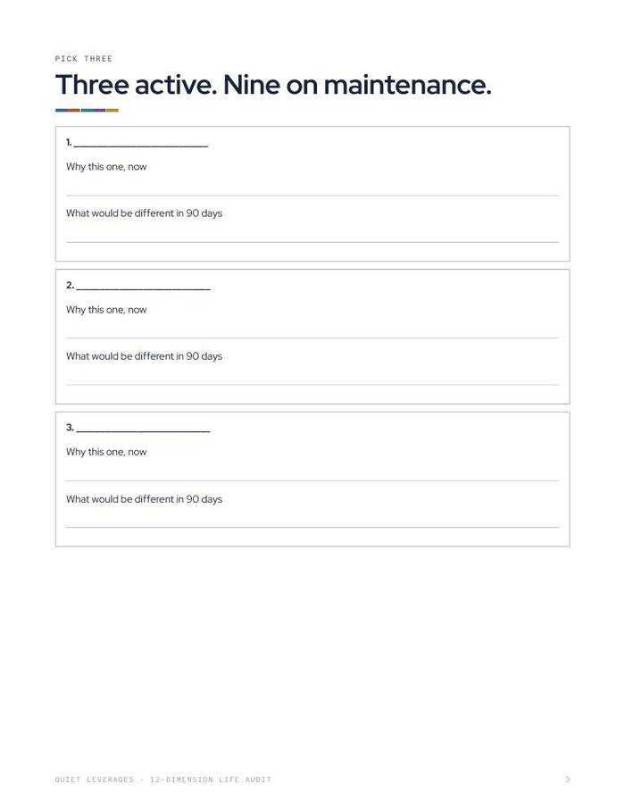
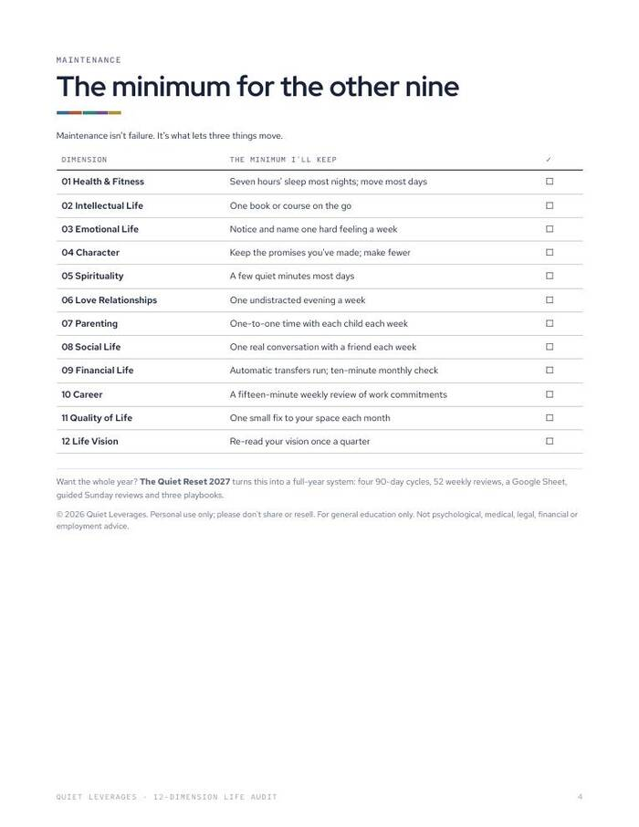

Score twelve areas of your life, then choose the three that would lift the rest.
Each dimension gets a 1 to 5 score, one fact and one concern. Then pick three and set a minimum for the other nine.
Printable PDF. US Letter, prints fine on A4 at 'fit to page'.

Twelve dimensions, one page
Score each from 1 to 5 and write one fact and one concern.
Pick three
A page with why-this-one prompts, so the choice is written, not felt.
Maintenance for nine
A table of the minimum you will keep for everything else.
dimensions scored 1 to 5
pages
areas picked, nine kept on maintenance
What you leave with
See the whole picture
Twelve areas side by side, so a single worry does not fill the view.
A reasoned choice
Three areas with a reason for each, and what would be different in ninety days.
Permission to hold the rest steady
A written minimum for the other nine means they are not forgotten.
A route to the full planner
The Quiet Reset 2027 builds a year on these same twelve dimensions.
What's in the download
Score the twelve, then choose three.
- 12 dimensions. Each with a 1 to 5 score, one fact and one concern.
- A pick-three page. With why-this-one prompts.
- A maintenance table. The minimum you will keep for the other nine.
- 4 pages, undated.


Score, pick, set a minimum
Score twelve
Rate each dimension 1 to 5 with a fact and a concern.
Pick three
Choose the three that would lift the rest and say why.
Set the minimum
Write the smallest thing you will keep up for the other nine.
Is this the right size?
Use this if
- You feel pulled in several directions and want to see them together.
- You want to choose by reasons, on paper.
- You want a short tool before a full planner.
Skip it if
- You want a year-long plan. See The Quiet Reset 2027.
- You want a clinical assessment. This is a planning page.
The numbers behind it
top posts in r/HENRYfinance are about feeling anxious, burnt out or empty despite doing well.
Quiet Leverages analysis of Reddit top posts, Oct 2025-Sep 2026of US adults began 2026 feeling financial stress.
NEFE, Jan 2026What readers say about 12-Dimension Life Audit
Get 12-Dimension Life Audit
One small tool, one sitting.
- Printable PDF, 4 pages
- Twelve scored dimensions
- Pick-three page and maintenance table
Before you decide
What format is it?
A printable PDF, 4 pages. Print it or use it on a tablet with any PDF app.
How long does it take?
It is four short pages, built to finish in one sitting.
Who is it for?
Anyone who wants to see their whole life on one page and choose where to focus.
Will it print on A4?
Yes. It is US Letter and prints fine on A4 at 'fit to page'.
Is it dated?
No. It is undated.
Is this advice?
No. It is a planning worksheet and general education, not medical, psychological, legal, financial or employment advice.
The next step after this one

Score twelve areas of your life, then choose the three that would lift the rest.
Each dimension gets a 1 to 5 score, one fact and one concern. Then pick three and set a minimum for the other nine.
Get it for $7Instant download on Gumroad. Print it or use it on a tablet.